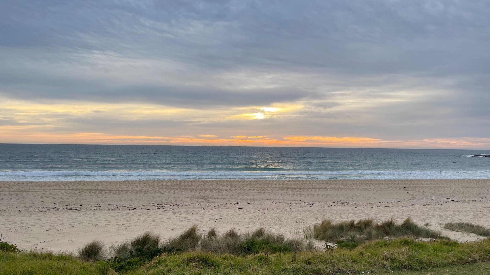

About Me#
I originally ventured into Cybersecurity during the rise of Global cyber threats in late 2022. What started out as curiosity quickly turned into me enrolling into my degree!
I quickly became interested in Cryptography after studying Discrete Mathematics where I received the grade of 95. I definitely wasn’t a maths person prior to doing that subject, but the unit chair and content changed that for me. During my Cryptography subject I got to explore the world of Quantum Computing. I originally chose this topic for my HD tasks only because it seemed really cool! Boy did I have it in for myself though, I spent significant time having to learn physics and quantum physics to pull it off. But the hard work paid off, with the report being selected to be published in the Deakin Maths Yearbook. Making me the first person to be featured twice, let alone in the same year.
Over the 2023/2024 summer, I was lucky enough to receive the Associate Deakin Research Summer Scholarship. Where I commenced research initially into computer networks. I was given the opportunity to explore and find my own area of interest as my supervisor saw potential in me to go on to do a PhD. During this, I stumbled into the world of Radio Access Networks, where I started to explore into O-RAN and resource allocation for 6G networks.

Living in rural Australia and knowing the struggle all too well with the lack of phone service, this really encouraged my passion to research this area. I intend to continue researching into O-RAN and 6G networks for my Honours thesis starting later this year and my PhD I hope to start in 2026. At the moment though, I’m focused on publishing my first research paper in this area.
Academic Accomplishments#
Excellence in Discrete Mathematics and Cryptography: Achieved a grade of 95 in Discrete Mathematics, which ignited a passion for Cryptography. This led to further exploration in Quantum Computing and Quantum Cryptography, resulting in two reports being published in the Deakin Maths Yearbook. This accomplishment made me the first person to be featured twice in the same year.
Associate Deakin Research Summer Scholarship Recipient (2023/2024): Awarded a summer research scholarship, initially focusing on computer networks before venturing into Radio Access Networks (RAN) and O-RAN technologies. This research is foundational for my upcoming Honours Research.
Tutorial Series Creator for Computer Networks: Developed a series of tutorials aimed at assisting fellow students with complex concepts in computer networks, helping me to achieve a score of 100 in the subject.
Research Publication: Working towards publishing my first research paper this year. In addition, I’ve been encouraged by my tutor from my network forensics subject to publish the project and report I did during the subject where I developed and evaluated machine learning models for detecting spam SMS in cellular networks.
Honours Thesis and PhD Focus: Preparing to begin my Honours thesis on O-RAN and 6G networks later this year, with a long-term goal to extend this research into a PhD starting in 2026.
Completed Subjects#
Current WAM of 91
Introduction to Programming (C++)
Object Oriented Programming (C#)
Secure Coding (Java, MySql)
Computer Systems
Introduction to Cybersecurity
Discrete Mathematics
Cryptography
Computer Networks
Professional Practices
Data Structures and Algorithms
Network Forensics
Computer Forensics
Cybersecurity Analytics
Completing in T2: Applied Frontiers of Cryptography at RMIT
Completing in T2: Optimisation and Constraint Programming
Completing in T2: Advanced Network Security
Completing in T2: Ethical Hacking
Work Experience#
Deakin University - Sessional Academic#
March 2024 to Present
Developing quizzes in NUMBAS and creating graph theory extensions using JME programming for SIT192.
Deakin University - Maths Mentor#
February 2024 to Present
Assisting students with maths problems through online sessions weekly.
Deakin University - SAP Learning Resource Developer#
August 2023 to February 2024
Developed learning materials for Computer Networks, conducted focus groups to improve these materials and enhance student engagement.
Deakin University - SMS Evaluation Team#
November to December 2023
Facilitated evaluations and improvements for the student mentoring program.
Certifications#
Certified Secure Computer User - EC Council - 2023
Certified Application Security Engineer - EC Council - 2023
Get in Touch#
If you’d like to learn more about my work or get in touch, feel free to connect with me on LinkedIn.